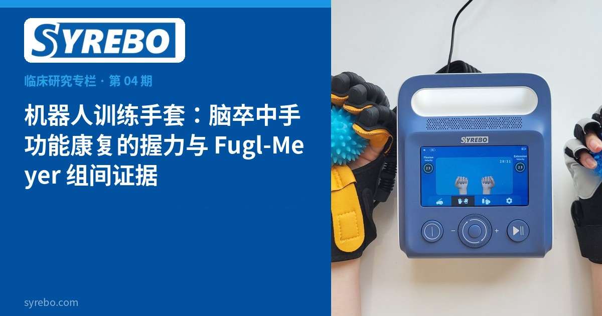
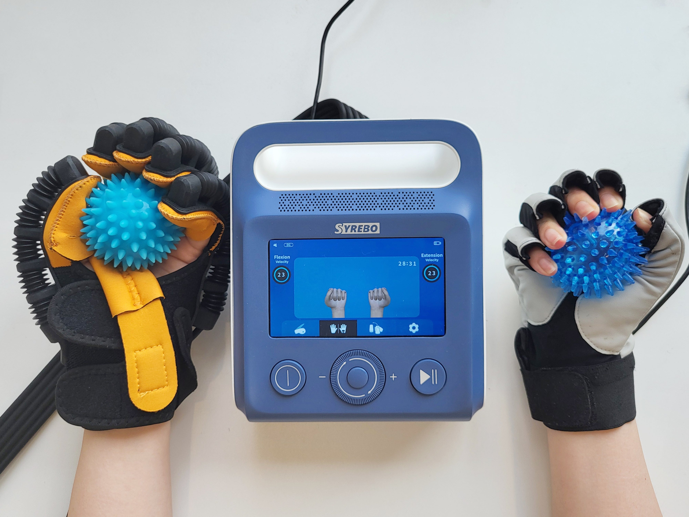

Syrebo rubrika kliničkih istraživanja
Čitanja temeljena na dokazima o robotskoj rehabilitaciji šake


Za bolesnike nakon moždanog udara sa slabom funkcijom šake dvije su stvari najvažnije: moći stisnuti i moći se precizno kretati — jedno se odnosi na snagu, drugo na motoričku kontrolu. Randomizirano kontrolirano istraživanje ispitalo je oboje.
Trideset bolesnika nakon moždanog udara nasumično je raspoređeno u dvije skupine po 15, uz usporedbu vježbanja potpomognutog robotskim rukavicama za vježbanje s kontrolnom skupinom.
Razlike među skupinama bile su statistički značajne u obje mjere: snaga stiska pokazala je srednju razliku od 1.87 (95% CI 0.39–3.35, P=0.015), a Fugl-Meyer rezultat motoričke funkcije srednju razliku od 16.67 (95% CI 3.9–29.4, P=0.012). Drugim riječima, skupina s robotskom rukavicom poboljšala se više od kontrolne skupine i u snazi i u motoričkoj funkciji.
Mali uzorak (n=30); razlike među skupinama su srednje razlike.